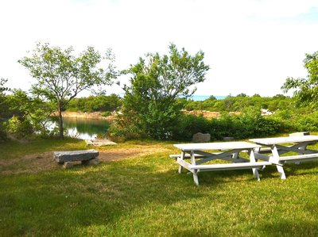

Halibut Point State Park
The one of the best of MA coastline. Amazing view! This hike as long or as short as you want. Halibut Point is a protected area on the border of Rockport and Gloucester with an old granite quarry, some trails through the woods, and a beautiful craggy shore line.
There is no beach, just rocks and cliffs. It's breath-taking and reminds you how much fun it is to hike around outside and enjoy the beauty surrounding us.
You can make this hike as long or as short as you want. There are places to stop and take photos on the cliffs by the sea, but there's also a quarry to hike around, little ponds to explore, side trails that take you into the woods to little clearings that are ripe for kids imaginations and dogs noses. There are wildflowers, tide pools, little plaques with historical information.
The trails are pretty flat, but there are rocky areas where you can climb around. Depending on the weather there may be some mud puddles to avoid.
Trials:
The trials is almost 2.5 miles long. Moderate walking.
When to visit:
You can go any time you wish but I recommend going to Halibut Point in the spring, summer or fall on a nice sunny day. Because this park is on the ocean so it's usually a few degrees warmer, but also pretty windy.
What to bring:
You can bring your food, water, snacks (carry in/carry out), sunscreen, a camera (because it's so beautiful), a met (if you wish to stay little longer to sit on the ground). You can also bring your games with you like cards. It really amazing playing games while having a beautiful view. But remember there is no swimming or camping at Halibut Point.
Park Directions
Halibut Point State Park is located in Cape Ann in north-eastern Massachusetts.
For more info click here
Must go place!! Some pictures are here !!
